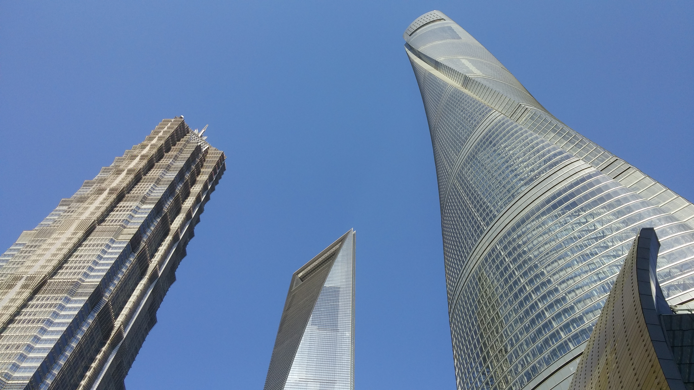
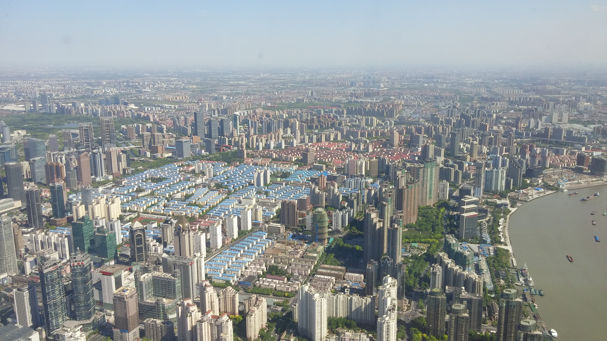
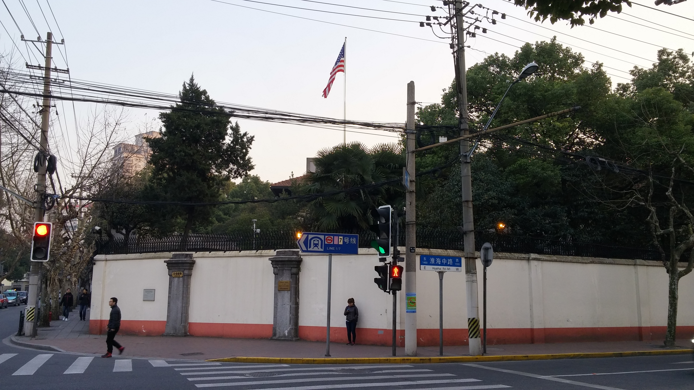
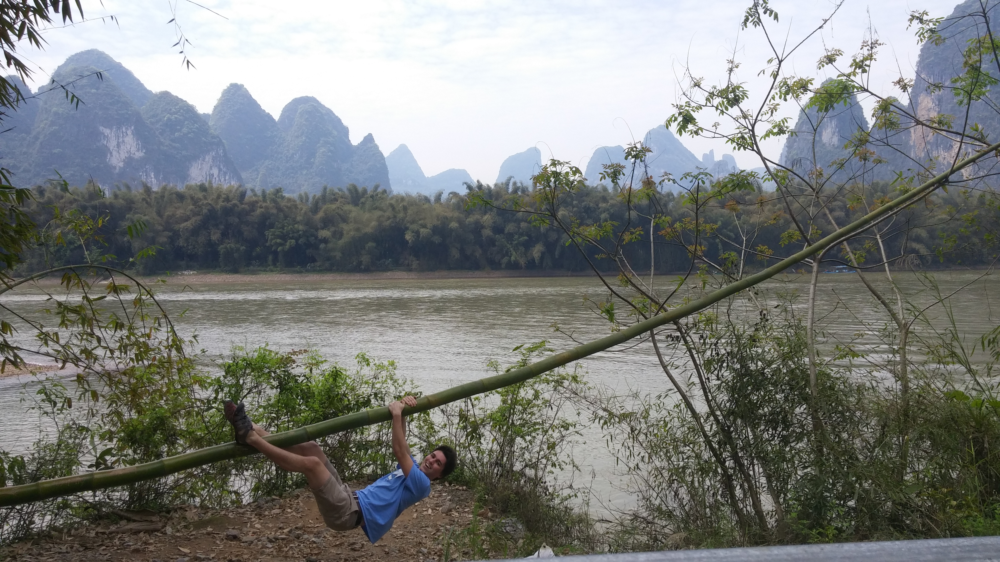

When I first told one of my friends, a lifelong Midwesterner, that I was going to China for a semester, he was confused.
“Why?” he asked.
“Why not?” I replied. “With the [study abroad] scholarships, it costs the same or even less than a semester at Purdue, and it will be a great experience.”
“But… There’s no freedom!”
I have wanted to study abroad for as long as I can remember. As someone who has always enjoyed travelling, I viewed it as a unique opportunity to get more than a passing glance at a place without needing to put the other things in my life on hold. As a child, I travelled extensively domestically with my family. Living in North Carolina and Indiana, we took many road trips across the South and Midwest. With extended family in California, Arizona, and Utah, I also made many trips out West. In the spring of 2010, I went on my only previous international trip, spending two months in Lausanne, Switzerland with my family. I was doing a stripped-down, homeschool, 8th grade curriculum and travelling Western Europe on weekends.


Left: Three of the 20 tallest buildings in the world, Shanghai. Right: The view from the Shanghai Tower.
The two months I spent in Europe comprised my most formative experience up until I went to college. Seeing other people think, act, eat, work, and express themselves differently than what I was used to made me more aware of how I went about those activities. It was empowering to realize there are many ways to live, and I could choose what I wanted for myself instead of defaulting to what I was raised with. In Europe, this insight was gained from the cultures that prevailing American values are inherited from. China was an opportunity to see philosophies totally outside of Western traditions. Spending four months living abroad would enable me to get a prolonged experience with something new, enough time to get over the initial discomfort and see the benefits, as well as the shortcomings, of a different lifestyle.
What was meant by my friends’ claim that there is “no freedom” in China? The internet censorship is certainly alarming, but is it really that much worse than many Americans using their internet freedom to create their own reality, live in a bubble, or even spread conspiracy theories? With a good VPN service to encrypt my connection ($10/month), I browsed unencumbered, albeit with reduced speed. The Chinese lack political freedom, but you don’t see them being led by a crass reality television star, trying to govern by inflammatory tweet, ignorant of the nuance required for good policy. While it is scary that they have a ruling party that exists outside of constitutional law, able to censor, mistreat, and imprison political dissenters and ethnic minorities with no legal recourse, this wouldn’t affect me. As a foreigner, I had a certain privilege. If the Chinese government thought I was causing too much trouble, they would just cancel my visa and make me leave. I wasn’t worth the political cost of punishing. While authoritarian, they aren’t North Korea. In my day-to-day life, how much would I be hindered by this lack of freedom? This question is uncomfortable, but important.


Left: The US consulate in Shanghai. Right: The Li River in Guilin. Different kinds of freedom.
If I had been unwilling to go to China because I thought I valued freedom too highly to give up a little bit for a short time, I would have missed something important. Instead of being dismissive of the general lack of ‘freedom’, I saw what freedoms exist, what freedoms are restricted, and how this shapes the lives of their citizens. This is the benefit of travelling abroad. Living in China helped me to better understand and value the freedom that exists in the United States. My inability to articulate exactly why I wanted to go before I left was fitting. There was so much to learn that I didn’t even know what there was to learn.
This touches the central theme of this blog, the most important thing I want to express. It’s a wide, wide world, full of color and nuance, deeply flawed, yet profoundly beautiful. It is a sentiment that is impossible to express in 140 characters, but understanding it is paramount to becoming a good citizen of the world. It is a lesson that is difficult to internalize without experiencing it firsthand.
While it can be fun to point out anything about China that is annoying or unsatisfactory and remark “Ha! Communism, LOL!,” this misses a larger reality. By travelling abroad, listening more than speaking, and trying to understand how other people think, one can learn a lot about their own biases and preconceptions. In a year in which I have felt ashamed of my American identity, a semester in China was very instrumental in helping me realize what America is, what America isn’t, and what I hope it can become.
I hope you enjoy reading about my experiences. Feel free to comment or ask questions on Facebook, but please keep a respectful tone.
~ Peter
For more information about my blog, check out the About tab.